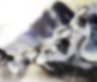
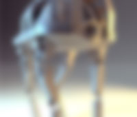
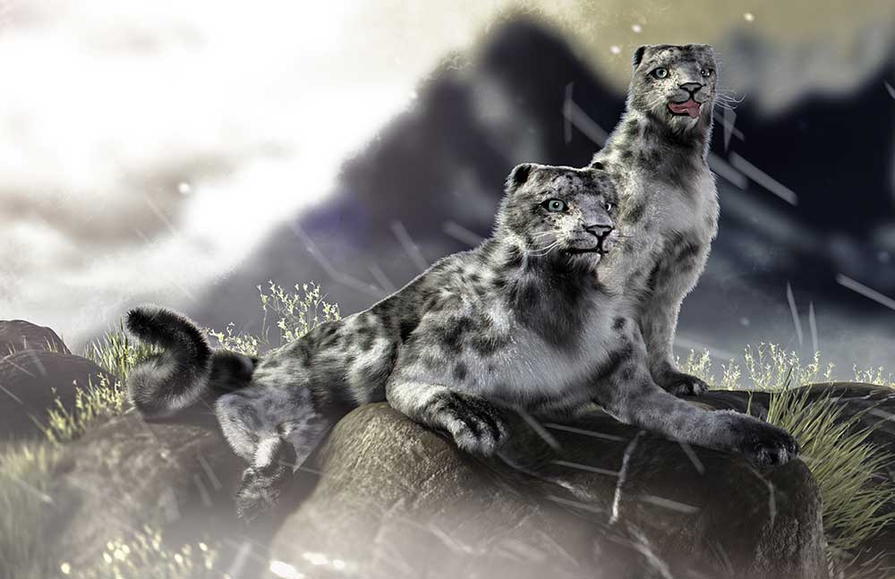
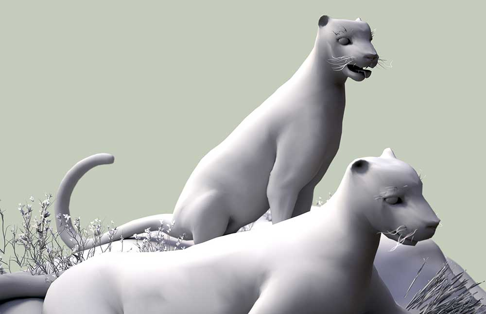
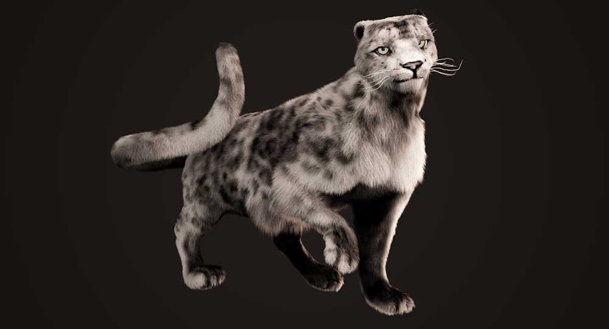
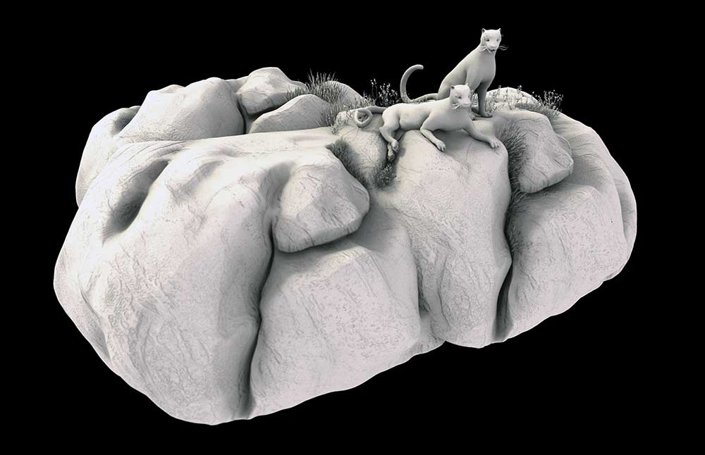
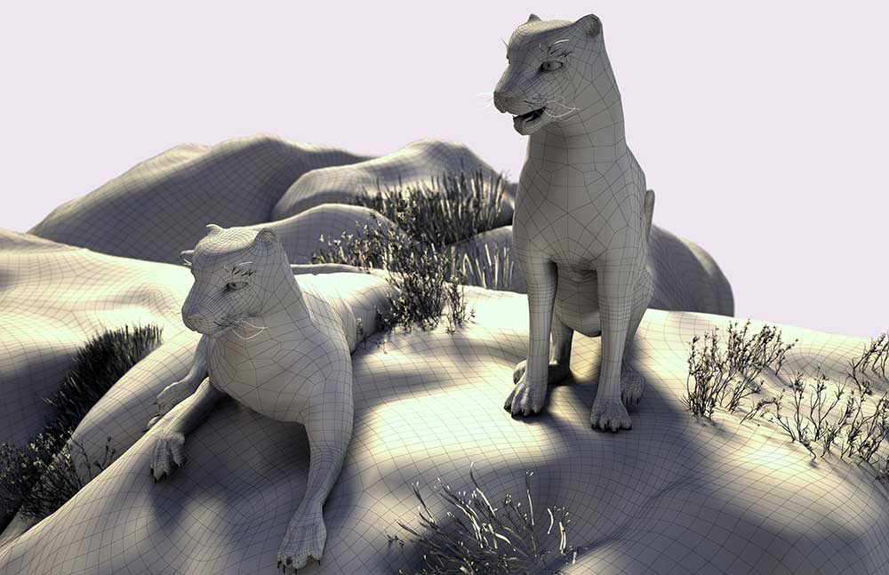

Hunting Irbis  |
Opportunists |
Yet She Promised |
Cyborg Head |
|---|---|---|---|
Robo Runner  |
Roadroller |
Pantheon |
 I'm Murad Nabiev a digital designer and 3D modeling generalist. I'm currently an Electronic Design and Multimedia senior at City College of New York and I plan to graduate next spring. My designer path began several years ago and quickly became my major field of interest and my main goal in life. I concentrate on 3D graphics and animation and I extensively use it in my work. I worked as a Christmas decorator in the past and a set of old skills combined with new ones allows me to succefully finish projects while maintaining their artistic uniqueness.
I'm Murad Nabiev a digital designer and 3D modeling generalist. I'm currently an Electronic Design and Multimedia senior at City College of New York and I plan to graduate next spring. My designer path began several years ago and quickly became my major field of interest and my main goal in life. I concentrate on 3D graphics and animation and I extensively use it in my work. I worked as a Christmas decorator in the past and a set of old skills combined with new ones allows me to succefully finish projects while maintaining their artistic uniqueness. |      | Rare and gorgeous "irbis" snow leopards observe the surroundings ready to hunt. 3Ds Max, Photoshop, Vray, Zbrush |
|---|---|